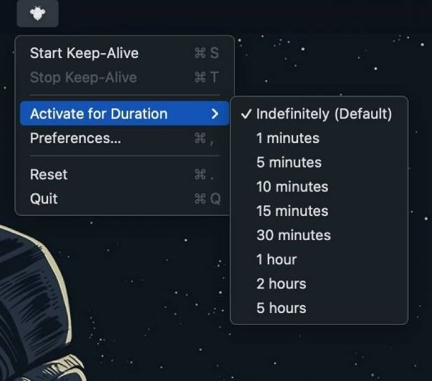
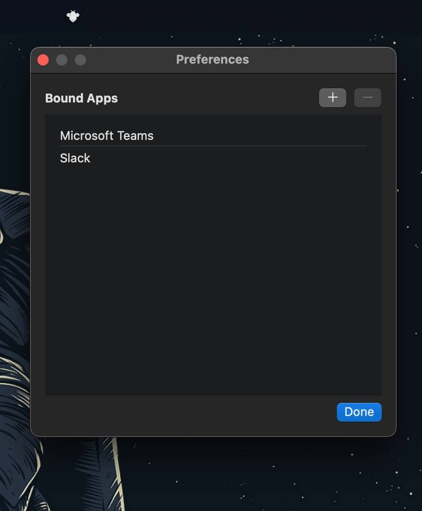

Update your browser to support support SVG <-- displayed if svg is not supported
Bee
Away
Be Online while Being Away.
① Using Homebrew (advised):
brew tap ragarwalll/homebrew-tap brew install --cask bee-away
② GitHub Release
BeeAway-latest.dmg
Simulate mouse movement to keep the Mac awake and active

For apps selected, it simulates focus by pinging the app icon in the menu bar

Kindly ignore, added to sounds fancy
Simulate mouse movement to keep the Mac awake and active.
For apps selected, it simulates focus by pinging the app icon in the menu bar.
Adapts to battery vs. AC power.
Supports custom activation durations.
Pauses itself when battery is low.
Adapts to the timeout of the system.
Lightweight and easy to use.
Built with SwiftUI, making it a native macOS application.
Open-source and available on GitHub for anyone to contribute or use.
find the source code
here
.
find my portfolio
here
.